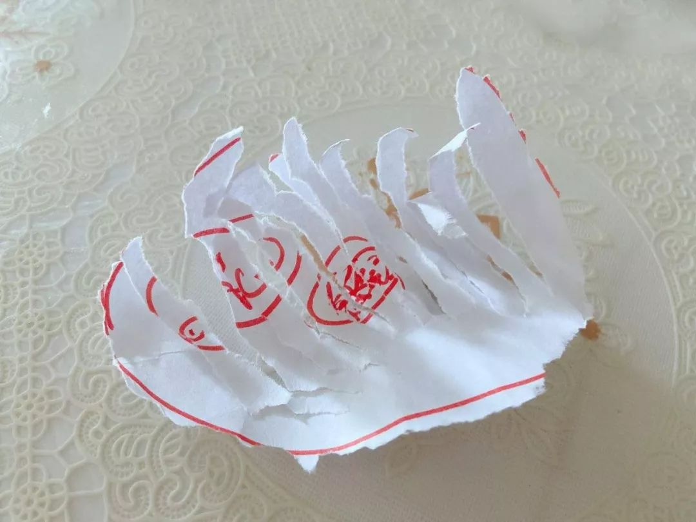

口述｜ICU男护士“Tony蒋”，曾经也是手残党
原文链接 备份链接 澎湃新闻记者 邓雅菲 实习生 苏笑语 “在支援湖北行前工作能力摸底时，我得知队友几乎都是有十几年ICU经验的主管护师，而我，除去三个月试用期，正式工龄才两个月，我能胜任紧张的一线工作吗？”飞往武汉的专机上，江西省赣州市 …
点击上方物质生活参考加星标！
物质生活参考

作者：赵小薇
来源：物质生活参考（ID：wzshck）
上周，物质生活参考推送了《超长期相处，被父母“逼疯”的年轻人》，许多读者看后表示：请关注一下长期带娃的父母，我们也快被逼疯了。
好的⬇️⬇️⬇️
每天清晨5点，肖琳都会被女儿吭哧吭哧的哼唧声吵醒。一般情况下，她会毫不犹豫地摸黑塞过去一堆零食，让一岁半的娃坐在夜色中咀嚼，以此为自己争取“再睡一会儿”的宝贵机会。
“不试试都不知道自己底线有多低。”她说，一个月来，自己带着俩娃居家办公，所谓的责任感自尊心，早已被鸡飞狗跳的生活模式消磨殆尽。
至于生存状态，“说生无可恋显得有点儿矫情了，”肖琳说，“难度相当于三年高考五年模拟吧，永远甭想闲着，一直要升级打怪。”
难以制服的“人类幼崽”
带娃升级为“HARD”模式，原本不在肖琳预计之内。疫情排山倒海而来，公婆出于安全考虑未能及时回到上海，以往婆婆带娃的模式临时改为小两口带娃。
情况很快升级：军人身份的爱人节后即复工，而肖琳所在公司则安排员工在家办公。二娃母亲随即陷入水深火热之中。
在肖琳眼中，四岁的儿子和一岁半的女儿，尚处于 “人类幼崽”阶段：难以预测，难以制服。但二者总有不同，一般来说，女儿的主要示威方式是大声哭闹，四岁的儿子则体现出人类文明的进步，学会了用语言表达。
每天午休，当老母亲好不容易哄睡了老二，终于打开笔记本，准备推进一下ppt，还在自己房间看动画片的老大就不时进来晃一下，问“一个小问题”。至于问题内容，有时是听到外面一个奇怪的声音问问是个啥，有时是想吃好吃的问问能不能吃，当然更多的是，“妈妈你在写什么你要写多久你什么时候陪我玩儿”。
“相当于你写东西的时候旁边有一只猫，一直站在你桌子旁边问你几点下班。”同样深受人类幼崽之苦的“奶爸”王新这样解释。猫一样的大儿子虽然唐僧但总还能以礼相待，还不会讲话的小儿子则很难晓之以理。
“他热爱一切圆形的东西，见到所有圆形的东西都想要，盘子和碗已经摔破了N个了。”王新长叹一口气，圆形爱好者最近看上了他的唱片，文艺中年的音乐梦被执拗的人类幼崽掰得稀碎。

狂热的圆形物体爱好者
“我真没想到他比我还爱唱片！”王同学非常阿Q地用遗传基因自我安慰，甚至联想起“晴雯撕扇”的美妙情节。
但更多人面对的“幼崽”并无特殊喜好，因而应对手段常规且枯燥。“会唱的歌儿都唱了，会讲的故事都讲了，想吃的东西都吃了，超级飞侠奥特曼的台词我都会背了。”
每天与儿子相伴的张力感到脑细胞已经被耗尽，满脑子只有循环播放的儿歌：“奶奶喂了两只鸡呀，大公鸡和大母鸡。”
被学龄儿童“逼疯”的悲惨中年
梁燕在朋友圈晒了一张摞在一起的课本截图，粗略一看七八本。配图说：这是工作之余要带孩子学的课程。没想到有生之年我成了全科辅导老师，还是没有辅导费的那种。
另一条朋友圈，她总结了辅导一年级儿子学习的日常：起床-早饭-写作业-心平气和地讲-略有点不耐烦地讲-强忍胸中怒火地讲-午饭-午休-爆发-和解-晚饭-吭哧瘪肚把作业讲完-睡觉。
此间艰辛与波折她表示“不忍多说”，“除了‘亲生的’三个字，你很难找到理由平息怒火或者自我安慰。”梁燕说。
矛盾的重点在于：开学虽然延迟了，但是“停学不停课”的指示下，作业并没有减少。每天早上一睁眼，梁燕都会颤抖着打开手机，记下各科老师的各项作业，按时间段布置下去之后，自己再开始远程办公。
与爱人一样，梁燕所在的单位原则上已经复工通勤。针对无人带娃的双职工家庭，各地出台的政策相似，即远程办公，或者“鼓励企业安排一名家长带薪居家看护”。夫妻俩协商后，居家带娃的责任落到梁燕身上。于是，以往只在下班后发生的惨剧，如今成了贯穿全天的持续性项目。
相对而言，刘西与女儿的相处大多数时间还算愉快。最近两次“炸裂”都发生在检查语文作业过程中：组词题中，女儿在“脸”后面写下了“小白脸”；多音字组词题，“作”的答案写的是：“作死”。
刘西捧着作业本目瞪口呆。在此之前，她头疼的还是女儿上英语网课时东倒西歪、昏昏欲睡的状态，“没想到先折在了中文上。”
但更让她目瞪口呆的，是微信群里秀出天际的神奇家长，开学第一天，一位家长录了一条孩子在家举行开学典礼和升旗仪式的视频，同时配上慷慨激昂的文字：校服依然湛蓝！红领巾依然鲜红！***表示：一定按照学校安排和少先队员的标准要求自己！

来自家长群的“表演”
刘西说，她突然对“作”这个多音字，有了更直观的理解。
来自“猪队友”的神助攻
对于很多人来说，戏精家长的杀伤力尚且有限，更大的伤害，往往来自身边的“猪队友”。
由于父母和育儿嫂都被困在老家，李如和老公只能开启双人组队带双娃模式。前几天，李如把小女儿哄睡的任务分配给队友，一下子觉得夜晚轻松很多。昨晚女儿爬回她身边，不断问她：怪兽来了吗？怪兽来了吗？
抓来队友询问，才知道，这几天哄睡的办法一直是：再不睡觉怪兽就来了！李如火冒三丈：教育孩子已经够我受的了，还得教育大人！
因为平常很少带娃，队友的招数很快捉襟见肘，于是回归了最原始的套路：每天带娃室内踢球半小时。目前的战绩是：上周踢碎了左边的花瓶，这周把右边对称的那只也踢破了。另一个简单粗暴的娱乐项目是“捉迷藏”，李如写了一半稿子出来一看，小女儿被藏进了脏衣篓。
“耗电大法”似乎是爸爸们带娃的最强大武器。周末时，肖琳会把娃全部交给老公，自己躲进小屋赶PPT进度。
屋外俨然一场热闹的小型运动会，短跑跳跃搬运翻滚以及背娃俯卧撑，或者是对着一面墙用switch打怪兽。一般情况下，不到八点，小怪兽们就能电量耗尽，沉沉睡去。
也有队友一直采取消极躲避态度。梁燕的老公每天下班后还要坐在车里“云办公”，不饿到万不得已绝不进屋，理由是“不想看到母子俩反目成仇的惨烈局面”。
夫妻俩为此大吵一架，胶着之中，儿子跳了出来，大声助威：现在是2-1！你们再打一架，谁厉害我就站在谁那边！
不是对策的对策
没有老人帮带、没有育儿嫂在职、只剩猪队友相助的日子，到底什么时候才能结束，被迫“打怪升级”的父母们至今难以预料。
许多人在艰难之中探索出一点另类生存之道。
一岁半的女儿见不得老母亲一门心思盯着手机，但如果同时做着一点别的什么事就还能体谅，于是肖琳每次刷微博的时候，都要一边刷一边撕纸；

一边玩儿手机一边撕纸的“成果”
实在没故事可讲时，张力会视频连线母亲，让奶奶在线“云带娃“。一般来说，可以换来儿子一小时左右的非暴力时段；
刘西要求女儿多背点古诗，最近背的一首是《送柴侍御》。她并不指望女儿成为精通诗词的才女，“只要组词的时候别暴露女土匪气质就可以了”；
也有弄巧成拙的时候。面对儿子一次又一次地打断工作，肖琳恐吓说：老板随时要开视频会，如果有娃捣乱，看到一次扣一千，妈妈就没钱给你买玩具了！
这一威胁十分有效。周末到来，当队友想给她送个苹果进屋时，儿子果断挡在门外：你一进去，我的乐高就没有了！
梁燕则感受到了危机教育带来的成果。前两天，七岁的儿子突然说，妈妈，我生日的时候，你不要给我买礼物了，没有礼物我也觉得很幸福。她问为什么，儿子说，因为可能到时候我们家就没钱花了。还主动表示：妈妈，把我的压岁钱给你吧。
真正让她觉得孩子从“小怪兽”变成“小天使”，是在知道爸爸对接的工作与湖北相关后，以往沉迷于手机游戏的儿子，很少再去抢队友的手机玩儿。
“你是在为国家做贡献，我支持你的。”他说。
参考资料：
[1]《记者调查：2亿人居家办公实验开启，是带娃办公两不误还是全耽误？》，来源：第一财经究竟视频 2020年2月15日；
[2] 《复工之后，孩子谁带？》，来源：澎湃新闻，2020年2月14日。
应受访者要求，
肖琳、王新、梁燕、张力、李如、刘西为化名。
头图为视频截图，内文图片为受访者提供。

△长按二维码，添加物质生活君微信，
回复“粉丝”，进入物质生活粉丝群，
获取独家优质生活参考。

\= 推荐阅读=

新冠时期的爱情

超长期相处，被父母“逼疯”的年轻人
这款游戏，让我对瘟疫有了新认识
- END-

原文链接 备份链接 澎湃新闻记者 邓雅菲 实习生 苏笑语 “在支援湖北行前工作能力摸底时，我得知队友几乎都是有十几年ICU经验的主管护师，而我，除去三个月试用期，正式工龄才两个月，我能胜任紧张的一线工作吗？”飞往武汉的专机上，江西省赣州市 …
原文链接 备份链接 每当看到那些穿着橙色工作服守在大街上的环卫工人，穿着绿马甲巡街的交警，一闪而过的黄色骑手小哥，24小时在药店守店的店员，我就觉得很安心。 而我，也是他们中的一员。 配图 | 作者供图 寻业中国·Work in …
原文链接 备份链接 “封闭与流动：疫情下的中国家政工”的第一篇投稿选登来自梦雨。知道梦雨早早从北京回老家，准备做手术；也知道她和农村生活关系一直是纠结的。看到稿子的名字，《写给我即将见面的姐妹们》，有点惊喜。我想起这位“来自家政工内部的 …
原文链接 备份链接 *************▲*************2月9日，航拍武汉市的市容（无人机照片）。 （新华社记者 才扬/图） 全文共4020字，阅读大约需要7分钟。 2月5日，谢青将服药间隔从12小时拉长到14小时， …
原文链接 备份链接 1 月 23 日凌晨两点，武汉发出通告，将于当天上午 10 时，关闭机场、火车站，全市城市公交、地铁、轮渡、长途客运也将暂停运营。26 日晚，武汉市长周先旺表示，” 因为春节和疫情的影响，目前有 500 多万人离开武 …